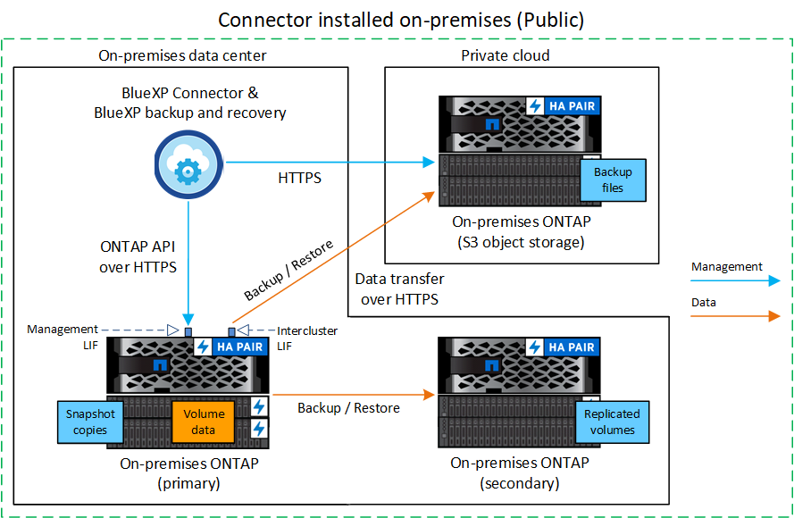
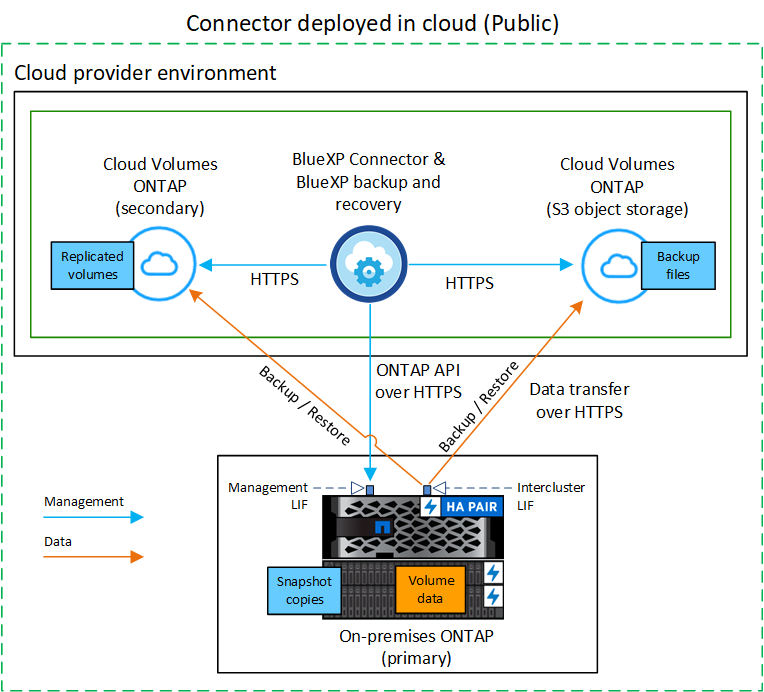

Release notes
Release notes
Back up on-premises ONTAP data to ONTAP S3
 Suggest changes
Suggest changes
Complete a few steps to get started backing up volume data from your primary on-premises ONTAP systems. You can send backups to a secondary ONTAP storage system (a replicated volume) or to a bucket on an ONTAP system configured as an S3 server (a backup file), or both.
The primary on-premises ONTAP system can be a FAS, AFF, or ONTAP Select system. The secondary ONTAP system can be an on-premises ONTAP or Cloud Volumes ONTAP system. The object storage can be on an on-premises ONTAP system or a Cloud Volumes ONTAP system on which you have enabled a Simple Storage Service (S3) object storage server.
Quick start
Get started quickly by following these steps. Details for each step are provided in the following sections in this topic.
 Identify the connection method you'll use
Identify the connection method you'll useReview how you'll connect your primary on-premises ONTAP cluster to the secondary ONTAP cluster for replication and to the ONTAP cluster configured as an S3 server for backup to object storage.
 Prepare your BlueXP Connector
Prepare your BlueXP ConnectorIf you've already deployed a BlueXP Connector, then you're all set. If not, then you'll need to create a BlueXP Connector to back up ONTAP data to ONTAP S3. You'll also need to customize network settings for the Connector so that it can connect to ONTAP S3.
 Verify license requirements
Verify license requirementsYou'll need to check license requirements for your ONTAP systems and for BlueXP backup and recovery.
 Prepare your ONTAP clusters
Prepare your ONTAP clustersDiscover your primary and secondary ONTAP clusters in BlueXP, verify that the clusters meet minimum requirements, and customize network settings so the clusters can connect to ONTAP S3 object storage.
 Prepare ONTAP S3 as your backup target
Prepare ONTAP S3 as your backup targetSet up permissions for the Connector so it can manage the ONTAP S3 bucket. You'll also need to set up permissions for the source on-premises ONTAP cluster so that it can read and write data to the ONTAP S3 bucket.
 Activate backups on your ONTAP volumes
Activate backups on your ONTAP volumesSelect the primary working environment and click Enable > Backup Volumes next to the Backup and recovery service in the right-panel. Then follow the setup wizard to select the volumes you want to back up, and the Snapshot, replication, and backup to object policies that you'll use.
Identify the connection method
There are many configurations in which you can create backups to an S3 bucket on an ONTAP system. Two scenarios are shown below.
The following image shows each component when backing up a primary on-premises ONTAP system to an on-premises ONTAP system configured for S3 and the connections that you need to prepare between them. It also shows a connection to a secondary ONTAP system in the same on-premises location to replicate volumes.

When the Connector and primary on-premises ONTAP system are installed in an on-premises location without internet access (a "private" mode deployment), the ONTAP S3 system must be located in the same on-premises data center.
The following image shows each component when backing up a primary on-premises ONTAP system to a Cloud Volumes ONTAP system configured for S3 and the connections that you need to prepare between them. It also shows a connection to a secondary Cloud Volumes ONTAP system in the same cloud provider environment to replicate volumes.

In this scenario the Connector should be deployed in the same cloud provider environment in which the Cloud Volumes ONTAP systems are deployed.
Prepare your BlueXP Connector
The BlueXP Connector is the main software for BlueXP functionality. A Connector is required to back up and restore your ONTAP data.
Create or switch Connectors
When you back up data to ONTAP S3, a BlueXP Connector must be available on your premises or in the cloud. You'll either need to install a new Connector or make sure that the currently selected Connector resides in one of these locations. The on-premises Connector can be installed in a site with or without internet access.
Prepare Connector networking requirements
Ensure that the network where the Connector is installed enables the following connections:
-
An HTTPS connection over port 443 to the ONTAP S3 server
-
An HTTPS connection over port 443 to your source ONTAP cluster management LIF
-
An outbound internet connection over port 443 to BlueXP backup and recovery (not required when the Connector is installed in a "dark" site)
Private mode (dark site) considerations
BlueXP backup and recovery functionality is built into the BlueXP Connector. When it is installed in private mode, you'll need to update the Connector software periodically to get access to new features. Check the BlueXP backup and recovery What's New to see the new features in each BlueXP backup and recovery release. When you want to use the new features, follow the steps to upgrade the Connector software.
When you use BlueXP backup and recovery in a standard SaaS environment, the BlueXP backup and recovery configuration data is backed up to the cloud. When you use BlueXP backup and recovery in a site with no internet access, the BlueXP backup and recovery configuration data is backed up to the ONTAP S3 bucket where your backups are being stored. If you ever have a Connector failure in your private mode site, you can restore the BlueXP backup and recovery data to a new Connector.
Verify license requirements
Before you can activate BlueXP backup and recovery for your cluster, you'll need to purchase and activate a BlueXP backup and recovery BYOL license from NetApp. The license is for backup and restore to object storage - no license is needed to create Snapshot copies or replicated volumes. This license is for the account and can be used across multiple systems.
You'll need the serial number from NetApp that enables you to use the service for the duration and capacity of the license. Learn how to manage your BYOL licenses.

|
PAYGO licensing is not supported when backing up files to ONTAP S3. |
Prepare your ONTAP clusters
You'll need to prepare your source on-premises ONTAP system and any secondary on-premises ONTAP or Cloud Volumes ONTAP systems.
Preparing your ONTAP clusters involves the following steps:
-
Discover your ONTAP systems in BlueXP
-
Verify ONTAP system requirements
-
Verify ONTAP networking requirements for backing up data to object storage
-
Verify ONTAP networking requirements for replicating volumes
Discover your ONTAP systems in BlueXP
Both your source on-premises ONTAP system and any secondary on-premises ONTAP or Cloud Volumes ONTAP systems must be available on the BlueXP Canvas.
You'll need to know the cluster management IP address and the password for the admin user account to add the cluster.
Learn how to discover a cluster.
Verify ONTAP system requirements
Ensure that the following ONTAP requirements are met:
-
Minimum of ONTAP 9.8; ONTAP 9.8P13 and later is recommended.
-
A SnapMirror license (included as part of the Premium Bundle or Data Protection Bundle).
Note: The "Hybrid Cloud Bundle" is not required when using BlueXP backup and recovery.
Learn how to manage your cluster licenses.
-
Time and time zone are set correctly. Learn how to configure your cluster time.
-
If you are going to replicate data, you should verify that the source and destination systems are running compatible ONTAP versions before replicating data.
Verify ONTAP networking requirements for backing up data to object storage
You must ensure that the following requirements are met on the system that connects to object storage.

|
|
The following ONTAP cluster networking requirements are needed:
-
The ONTAP cluster initiates an HTTPS connection over a user-specified port from the intercluster LIF to the ONTAP S3 server for backup and restore operations. The port is configurable during backup setup.
ONTAP reads and writes data to and from object storage. The object storage never initiates, it just responds.
-
ONTAP requires an inbound connection from the Connector to the cluster management LIF.
-
An intercluster LIF is required on each ONTAP node that hosts the volumes you want to back up. The LIF must be associated with the IPspace that ONTAP should use to connect to object storage. Learn more about IPspaces.
When you set up BlueXP backup and recovery, you are prompted for the IPspace to use. You should choose the IPspace that each LIF is associated with. That might be the "Default" IPspace or a custom IPspace that you created.
-
The nodes' intercluster LIFs are able to access the object store (not required when the Connector is installed in a "dark" site).
-
DNS servers have been configured for the storage VM where the volumes are located. See how to configure DNS services for the SVM.
-
If you use are using a different IPspace than Default, then you might need to create a static route to get access to the object storage.
-
Update firewall rules, if necessary, to allow BlueXP backup and recovery service connections from ONTAP to object storage through the port you specified (typically port 443) and name resolution traffic from the storage VM to the DNS server over port 53 (TCP/UDP).
Verify ONTAP networking requirements for replicating volumes
If you plan to create replicated volumes on a secondary ONTAP system using BlueXP backup and recovery, ensure that the source and destination systems meet following networking requirements.
On-premises ONTAP networking requirements
-
If the cluster is in your premises, you should have a connection from your corporate network to your virtual network in the cloud provider. This is typically a VPN connection.
-
ONTAP clusters must meet additional subnet, port, firewall, and cluster requirements.
Because you can replicate to Cloud Volumes ONTAP or an on-premises systems, review peering requirements for on-premises ONTAP systems. View prerequisites for cluster peering in the ONTAP documentation.
Cloud Volumes ONTAP networking requirements
-
The instance's security group must include the required inbound and outbound rules: specifically, rules for ICMP and ports 11104 and 11105. These rules are included in the predefined security group.
Prepare ONTAP S3 as your backup target
You must enable a Simple Storage Service (S3) object storage server in the ONTAP cluster that you plan to use for object storage backups. See the ONTAP S3 documentation for details.
Note: You can discover this cluster to the BlueXP Canvas, but it is not identified as being an S3 object storage server, and you can't drag and drop a source working environment onto this S3 working environment to initiate backup activation.
This ONTAP system must meet the following requirements.
- Supported ONTAP versions
-
ONTAP 9.8 and later is required for on-premises ONTAP systems.
ONTAP 9.9.1 and later is required for Cloud Volumes ONTAP systems. - S3 credentials
-
You must have created an S3 user to control access to your ONTAP S3 storage. See the ONTAP S3 docs for details.
When you set up backup to ONTAP S3, the backup wizard prompts you for an S3 access key and secret key for a user account. The user account enables BlueXP backup and recovery to authenticate and access the ONTAP S3 buckets used to store backups. The keys are required so that ONTAP S3 knows who is making the request.
These access keys must be associated with a user who has the following permissions:
"s3:ListAllMyBuckets", "s3:ListBucket", "s3:GetObject", "s3:PutObject", "s3:DeleteObject", "s3:CreateBucket"
Activate backups on your ONTAP volumes
Activate backups at any time directly from your on-premises working environment.
A wizard takes you through the following major steps:
-
Select the volumes that you want to back up
-
Define the backup strategy and policies
-
Review your selections
You can also Show the API commands at the review step, so you can copy the code to automate backup activation for future working environments.
Start the wizard
-
Access the Activate backup and recovery wizard using one of the following ways:
-
From the BlueXP canvas, select the working environment and select Enable > Backup Volumes next to the Backup and recovery service in the right-panel.
-
Select Volumes in the Backup and recovery bar. From the Volumes tab, select the Actions (…) option and select Activate Backup for a single volume (that does not already have replication or backup to object storage enabled).
The Introduction page of the wizard shows the protection options including local Snapshots, replications, and backups. If you did the second option in this step, the Define Backup Strategy page appears with one volume selected.
-
-
Continue with the following options:
-
If you already have a BlueXP Connector, you're all set. Just select Next.
-
If you don't have a BlueXP Connector, the Add a Connector option appears. Refer to Prepare your BlueXP Connector.
-
Select the volumes that you want to back up
Choose the volumes you want to protect. A protected volume is one that has one or more of the following: Snapshot policy, replication policy, backup to object policy.
You can choose to protect FlexVol or FlexGroup volumes; however, you cannot select a mix of these volumes when activating backup for a working environment. See how to activate backup for additional volumes in the working environment (FlexVol or FlexGroup) after you have configured backup for the initial volumes.
|
|
|
Note that if the volumes you choose already have Snapshot or replication policies applied, then the policies you select later will overwrite these existing policies.
-
In the Select Volumes page, select the volume or volumes you want to protect.
-
Optionally, filter the rows to show only volumes with certain volume types, styles, and more to make the selection easier.
-
After you select the first volume, then you can select all FlexVol volumes (FlexGroup volumes can be selected one at a time only). To back up all existing FlexVol volumes, check one volume first and then check the box in the title row. ().
-
To back up individual volumes, check the box for each volume (
 ).
).
-
-
Select Next.
Define the backup strategy
Defining the backup strategy involves configuring the following options:
-
Protection options: Whether you want to implement one or all of the backup options: local Snapshots, replication, and backup to object storage
-
Architecture: Whether you want to use a fan-out or cascading backup architecture
-
Local Snapshot policy
-
Replication target and policy
-
Backup to object storage information (provider, encryption, networking, backup policy, and export options).
-
In the Define Backup Strategy page, choose one or all of the following. All three are selected by default:
-
Local Snapshots: Creates local Snapshot copies.
-
Replication: Creates replicated volumes on another ONTAP storage system.
-
Backup: Backs up volumes to a bucket on an ONTAP system configured for S3.
-
-
Architecture: If you chose both replication and backup, choose one of the following flows of information:
-
Cascading: Backup data flows from the primary to the secondary system, and then from the secondary to object storage.
-
Fan out: Backup data flows from the primary to the secondary system and from the primary to object storage.
For details about these architectures, refer to Plan your protection journey.
-
-
Local Snapshot: Choose an existing Snapshot policy or create a new one.
If you want to create a custom policy before activating the Snapshot, you can use System Manager or the ONTAP CLI snapmirror policy createcommand. Refer to ONTAP CLI forsnapmirror policy.
To create a custom policy using this service before activating the Snapshot, refer to Create a policy. To create a policy, select Create new policy and do the following:
-
Enter the name of the policy.
-
Select up to 5 schedules, typically of different frequencies.
-
Select Create.
-
-
Replication: If you selected Replication, set the following options:
-
Replication target: Select the destination working environment and SVM. Optionally, select the destination aggregate (or aggregates for FlexGroup volumes) and a prefix or suffix that will be added to the replicated volume name.
-
Replication policy: Choose an existing replication policy or create a new one.
To create a policy, select Create new policy and do the following:
-
Enter the name of the policy.
-
Select up to 5 schedules, typically of different frequencies.
-
Select Create.
-
-
-
Back up to Object: If you selected Backup, set the following options:
-
Provider: Select ONTAP S3.
-
Provider settings: Enter the S3 server FQDN details, port, and the users' access key and secret key.
The access key and secret key are for the user you created to give the ONTAP cluster access to the S3 bucket.
-
Networking: Choose the IPspace in the source ONTAP cluster where the volumes you want to back up reside. The intercluster LIFs for this IPspace must have outbound internet access (not required when the Connector is installed in a "dark" site).
Selecting the correct IPspace ensures that BlueXP backup and recovery can set up a connection from ONTAP to your ONTAP S3 object storage. -
Backup policy: Select an existing backup policy or create a new one.
You can create a policy with System Manager or the ONTAP CLI. To create a custom policy using the ONTAP CLI snapmirror policy createcommand, refer to ONTAP CLI forsnapmirror policy.
To create a custom policy before activating the backup using the UI, refer to Create a policy. To create a policy, select Create new policy and do the following:
-
Enter the name of the policy.
-
Select up to 5 schedules, typically of different frequencies.
-
Select Create.
-
-
Export existing Snapshot copies to object storage as backup files: If there are any local Snapshot copies for volumes in this working environment that match the backup schedule label you just selected (for example, daily, weekly, etc.), this additional prompt is displayed. Check this box to have all historic Snapshots copied to object storage as backup files to ensure the most complete protection for your volumes.
-
-
Select Next.
Review your selections
This is the chance to review your selections and make adjustments, if necessary.
-
In the Review page, review your selections.
-
Optionally check the box to Automatically synchronize the Snapshot policy labels with the replication and backup policy labels. This creates Snapshots with a label that matches the labels in the replication and backup policies. If the policies don't match, backups will not be created.
-
Select Activate Backup.
BlueXP backup and recovery starts taking the initial backups of your volumes. The baseline transfer of the replicated volume and the backup file includes a full copy of the source data. Subsequent transfers contain differential copies of the primary storage data contained in Snapshot copies.
A replicated volume is created in the destination cluster that will be synchronized with the primary storage volume.
An S3 bucket is created in the service account indicated by the S3 access key and secret key you entered, and the backup files are stored there.
The Volume Backup Dashboard is displayed so you can monitor the state of the backups.
You can also monitor the status of backup and restore jobs using the Job Monitoring panel.
Show the API commands
You might want to display and optionally copy the API commands used in the Activate backup and recovery wizard. You might want to do this to automate backup activation in future working environments.
-
From the Activate backup and recovery wizard, select View API request.
-
To copy the commands to the clipboard, select the Copy icon.
What's next?
-
You can manage your backup files and backup policies. This includes starting and stopping backups, deleting backups, adding and changing the backup schedule, and more.
-
You can manage cluster-level backup settings. This includes changing the network bandwidth available to upload backups to object storage, changing the automatic backup setting for future volumes, and more.
-
You can also restore volumes, folders, or individual files from a backup file to an on-premises ONTAP system.